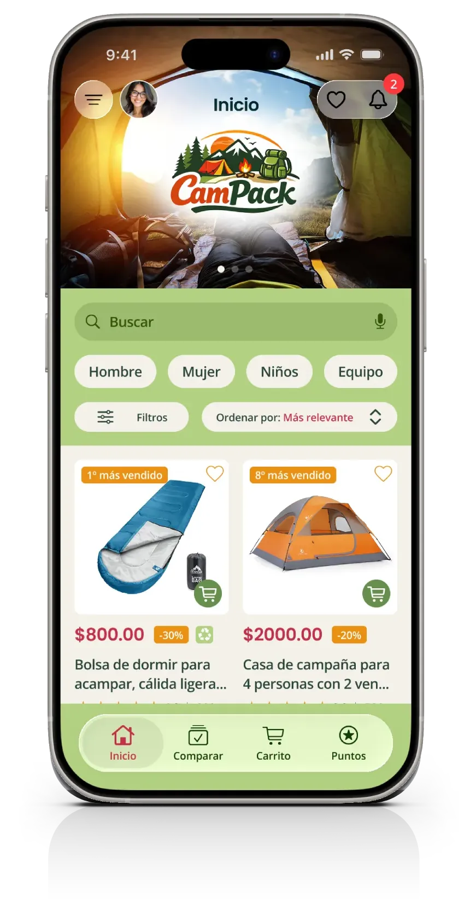
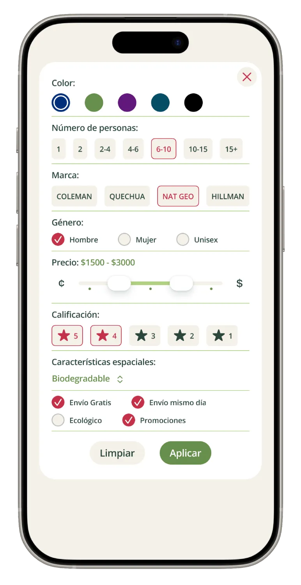
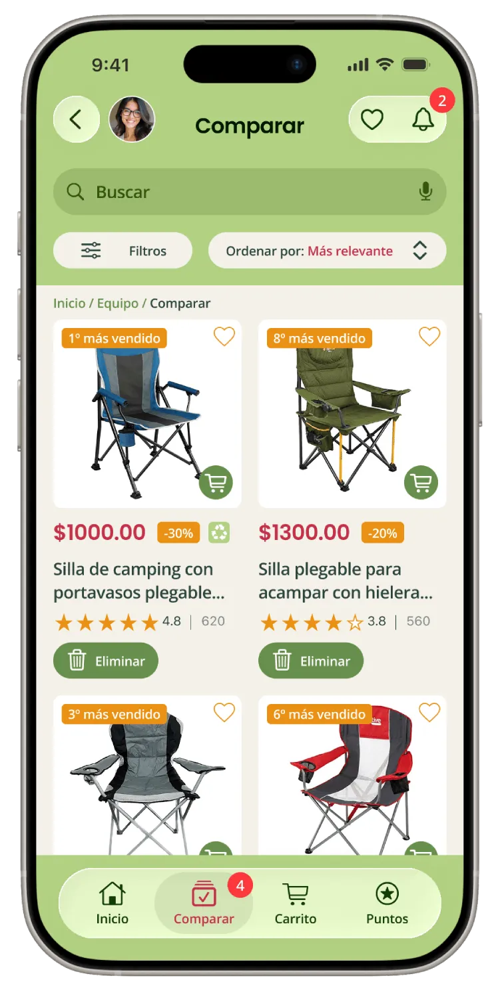
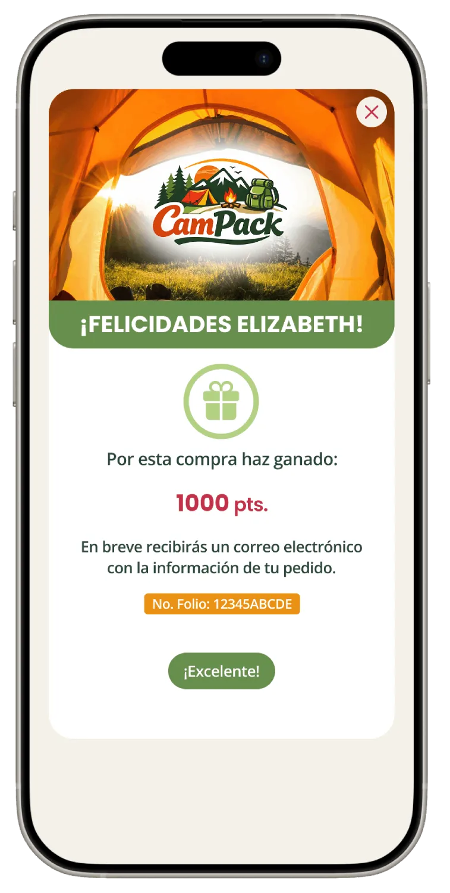

CamPack — Diseño UX para mejorar la decisión de compra en eCommerce
Problema
Los usuarios tienen dificultades para encontrar productos adecuados a sus necesidades, lo que genera confusión y dificulta la decisión de compra.
Objetivo
Diseñar una experiencia más clara y simple que facilite la búsqueda, comparación y selección de productos.
Insight
Cada tipo de usuario busca cosas distintas, por lo que un catálogo genérico no facilita la decisión de compra.
Investigación
Se identificaron 4 perfiles principales con diferentes necesidades de espacio, comodidad y portabilidad.
Familias
Parejas
Grupos
Individual
Decisión de diseño
Se creó un sistema de filtros por tipo de usuario para facilitar la búsqueda y mostrar productos más relevantes.

Decisión clave
Segmentar la experiencia por tipo de usuario en lugar de mantener un catálogo genérico.
Evolución visual
Wireframe → Interfaz final
Proceso visual desde la estructura inicial hasta la interfaz final.
Proceso
Flujo principal: explorar → filtrar → comparar → comprar
El flujo fue diseñado para facilitar la exploración de productos y ayudar al usuario a decidir más rápido.
Ver prototipo de baja fidelidadHallazgos de usabilidad
Las pruebas mostraron confusión al comparar productos, dificultad con los filtros y problemas de navegación. Se simplificó la interfaz y se mejoró la organización del contenido.

- Confusión entre comparar y comprar
- Dificultad para usar filtros
- Problemas de navegación
Solución
Se mejoró la navegación, los filtros y la organización de la información para facilitar la elección de productos.
La interfaz facilita la búsqueda y comparación de productos mostrando primero la información más importante.
Ver prototipo de alta fidelidadComparación de productos
Se diseñó una herramienta para comparar productos de forma clara y facilitar la toma de decisiones.
- Visualización clara de diferencias
- Facilita decisiones informadas
- Reduce la incertidumbre en la compra
Facilitando la toma de decisiones

Incentivo a la recompra
Se agregó un sistema de puntos para incentivar futuras compras y mejorar la experiencia después de la compra.
Este enfoque retoma principios de programas de lealtad aplicados al eCommerce.

El sistema de puntos refuerza la satisfacción post-compra y fomenta la lealtad.
Resultado
La solución convirtió un catálogo genérico en una experiencia más clara y fácil de usar.
Los usuarios pueden buscar, filtrar y comparar productos de forma más rápida y sencilla.
- Búsqueda más clara
- Comparación más sencilla
- Menor esfuerzo para decidir
La propuesta fue ajustada a partir de pruebas de usabilidad.
Aprendizajes
Entender las necesidades reales de los usuarios ayudó a crear una experiencia más clara, simple y fácil de usar.
Agradecimientos
Este proyecto fue posible gracias a las personas que participaron en las entrevistas y pruebas de usabilidad. Su retroalimentación ayudó a mejorar la experiencia en cada iteración.
Para proteger la privacidad de las personas participantes, sus nombres se presentan mediante alias.
Participar en las pruebas de usabilidad fue una gran experiencia. Me gustó ver cómo cada iteración mejoró la aplicación y la hizo más intuitiva. Se nota el cuidado que hubo para escuchar la retroalimentación y convertirla en mejoras reales.
Participante A
Participó en: Wireframes · Usabilidad
Me sorprendió descubrir todo lo que eres capaz de hacer. Gracias por invitarme a formar parte de este proyecto. Fue muy interesante conocer el proceso y ver cómo una idea se convirtió en una aplicación bien pensada y fácil de usar.
Participante B
Participó en: Wireframes · Usabilidad